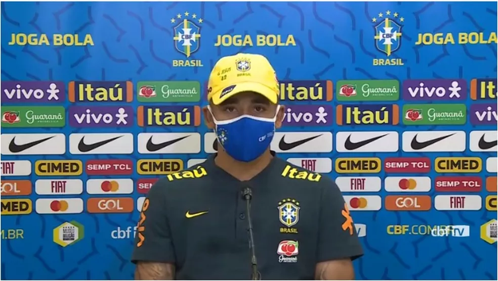

Gabriel Jesus assume importância na Seleção
Gabriel Jesus assume importância na Seleção e tira peso sobre Neymar: "Não pode cair só nele"
Gabriel Jesus tem apenas 23 anos, mas fala com a experiência de quem já está na seleção brasileira há quatro anos. Com 42 convocações no currículo e sendo o artilheiro da era Tite, com 18 gols em 39 jogos, o atacante assume a sua importância não foge da responsabilidade com a amarelinha.
De volta à Seleção após ficar fora das primeiras rodadas das Eliminatórias, por conta de lesão, Gabriel Jesus concedeu entrevista coletiva nesta quarta-feira e falou do seu papel na equipe:
– Independente de ser jovem, tenho um certo tempo na Seleção, vivi momentos muito bons, como momentos ruins. Venho criando mais experiências, sei o que é vestir a camisa da Seleção. Não estou há muito tempo, mas as ocasiões que vivi me fizeram fortalecer mais, abrir a mente sobre o que é vestir a camisa da Seleção. Sei da responsabilidade, me considero um cara que tem a responsabilidade de ir a campo e trazer a vitória, dar 100% no campo e buscar a vitória a todo custo. Às vezes não vai acontecer, mas não podemos deixar de tentar – afirmou o atacante do Manchester City, que ainda completou:
"Mesmo jovem ainda, tenho uma certa história aqui e estou feliz por vestir essa camisa que sempre sonhei. E sempre quando tem convocação é a mesma festa de sempre, fico olhando, escuto meu nome e fico emocionado. Sempre quero vir e ajudar, e dessa vez vim com 100% de foco para poder ajudar."
— Gabriel Jesus
"Voltei e estou bem"
Jesus revelou a gravidade da lesão muscular que sofreu contra o Wolverhampton. Foi grau 3 no reto femoral da coxa. Ele sentiu no início do segundo tempo, não saiu do jogo e, nos acréscimos, aos 49 minutos, guardou o dele. O City venceu por 3 a 1 e ele atuou por quase um tempo mesmo lesionado.
- Foi uma lesão muito complicada. Num primeiro momento, terminei o jogo bem, mas quando o sangue esfriou, não conseguia andar direito, foi um chute e depois um sprint que acabei sentindo algo, mas eu continuei.
"E no dia seguinte o doutor perguntou como eu consegui terminar o jogo. Eu não senti e depois os exames mostraram. Foi uma recuperação demorada, porque é uma região que sangra bastante."
— Gabriel Jesus
- E eu ficava incomodado por estar parado, e ser cortado me deixou bastante chateado pela lesão. Depois da entrevista do Guardiola, aconteceu alguma confusão, eu já estava prestes a voltar, mas ficou tudo resolvido. Voltei e estou bem.
Gabriel Jesus também afirmou que a responsabilidade e as cobranças não podem recair apenas sobre Neymar e, apesar de reconhecer a importância do camisa 10, lembrou que a Seleção já mostrou que pode vencer sem ele.
Diante da Venezuela, nesta sexta-feira, no Morumbi, Neymar não poderá atuar por conta de uma lesão muscular na coxa esquerda. Ele faz tratamento intensivo e segue como dúvida para a partida contra o Uruguai, na próxima terça, no Estádio Centenário, em Montevidéu.
– Óbvio que a gente fala da importância do Neymar no clube que estiver e para nossa seleção, o quanto ele deu e dá todos os dias para nosso futebol. Sou muito fã, e se tratando de Seleção todos têm que chamar a responsabilidade, não pode cair só nele. Todos estão aqui por um porquê. Com o Neymar, ficamos mais perto da vitória, mas a Seleção demonstrou que pode jogar sem. Queremos sempre que ele esteja à disposição, pois faz gol, dá assistências. Mas se ele não pode jogar, sabemos da importância dele, mas temos que chamar a responsabilidade, pois quem está aqui tem qualidade para fazer a seleção ganhar.
Veja abaixo outros trechos da entrevista coletiva de Gabriel Jesus:
Posicionamento
– Não tenho preferência, dou a opção para os treinadores no City e na Seleção, essa polivalência de jogar por dentro ou pelas beiradas. Venho jogando por dentro no City, mas procuro me mexer. Aqui na Seleção jogo mais de ponta, às vezes caio por dentro. Não tenho preferência, onde me colocarem eu vou dar meu melhor.
Volta à Seleção
– Fiquei ansioso para vir mês passado, mas aconteceu a lesão. Acompanhei os dois jogos, torci muito e estou feliz por estar de volta após longo período fora. São jogadores que fazem a diferença em campo, ajudam a seleção e vão fazer falta. Mas tem jogadores que podem dar conta do recado, se trata de seleção brasileira, e quem está aqui tem que chamar a responsabilidade.
Engajamento e ativismo social
– Acho que todos os influenciadores, quando você se torna um, é preciso se posicionar. Você tem que entender mais do assunto que vai se posicionar, pois não adianta se posicionar errado. Só é válido quando você se posiciona certo. É muito válido, sim, pra todos que tenha voz, seus seguidores, e a gente como figura pública, como jogador da Seleção, que está fora do Brasil, temos sim que nos posicionar sempre sobre qualquer assunto que apareça.
Esquema tático da Seleção
– Acompanhei os jogos, vi a formação bem notável, com o Lodi descendo mais com qualidade de cruzamento. Para todo atacante é bom ter lateral indo no fundo e cruzando, ficamos feliz com o posicionamento. Do jeito que a Seleção jogou, fico contente. O desafio é sempre difícil, mas você vê que a defesa também fica sólida. O atacante tem sempre saber que tem que ajudar, mas você sabendo que pode ir "de boa" é sempre melhor.
Relação com a mãe
– Sempre estou conversando com minha mãe, ela me dá bronca no futebol e na vida pessoal. Todos sabem do carinho e amor que tenho pela minha mãe, ela sempre vem dar bronca e eu escuto, levo para a minha vida. Isso me fez ser o homem e o atleta que sou, o profissional que venho me tornando. Infelizmente, ela não está em Manchester comigo, espero que em dezembro ela possa ir, por conta do vírus, mas sempre trocamos mensagens.